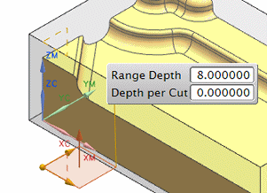
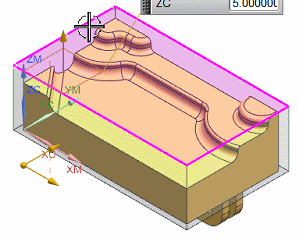
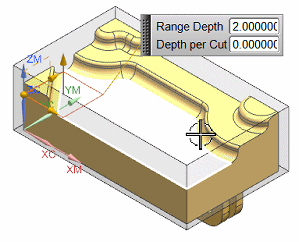

定义切削层
您将编辑当前切削层，以使其从毛坯几何体顶部延伸到部件几何体上的选定点。
-
点击刀轨设置组的切削层
 。
。将打开切削层对话框。
当前范围为部件几何体的顶部到底部，由两个平面符号表示。

在范围定义组中，展开列表子组，注意范围深度和每刀切削深度值。
-
在范围 1 的顶部组中，点击选择对象 。
-
选择毛坯顶部的任意点。

上方平面符号应该移动到毛坯顶部。
-
确保已选择范围定义组的选择对象 。
您将指定范围底部的位置，这个位置靠底部平面符号标记，符号将在选择位置之后移动。
-
选择如图所示面来定义范围底部。

注意到范围深度字段现在显示为2.5，范围现在为毛坯几何体顶部到部件几何体上的选定点，范围将与选定的几何体维持关联。
没有为当前范围指定切削深度，您将指定每刀深度值为0.250。
-
在每刀的深度输入框中键入0.2500。